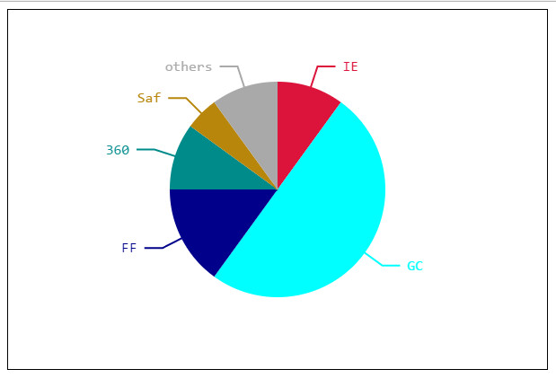

CanvasImage
绘制图像
普通的渲染图像
- drawImage（imgobj,x,y）
- 在canvas的（x,y）位置上，渲染指定的imgobj的图像
缩放绘制图像
- drawImage（imgobj,x,y,width,height）
- 在canvas的（x,y）位置上，根据指定发宽和高，渲染指定的imgobj的图像
切片绘制图像
- drawImage（imgobj,sx,sy,swidth,sheight,x,y,width,height）
- sx,sy,swidth,sheight:在源图片上的sx、sy位置切片一个swidth宽、sheight高的图像。
- x,y,width,height：将上一步切出来的图像绘制在canvas的x，y位置上 ，并且指定渲染的宽和高。
坐标系变换
平移坐标系
ctx.translate(x,y)- 将坐标系的原点平移到指定的(x,y)。
旋转坐标系
ctx.ratate(radian)- 以当前原点旋转坐标系到指定的弧度radian
- 如果为正数 顺时针旋转，负数为逆时针旋转。
清除画布
ctx.clearRect(x,y,w,h)
- 清楚由x,y,w,h确定的矩形内部所有的图形。
翻滚吧！小矩形！

|
|
饼状图

状态保存与恢复
ctx.sava()将上一次的状态保存起来ctx.restore()恢复最近一次保存的状态
可以联想栈结构先进后出。
难点
canvas渲染问题
在canvas中，渲染的最小单位1px。
如果指定线宽为奇数时，在渲染时实际线宽会大于指定的线宽。
在绘制斜线时，可能会出现锯齿现象。
坐标系旋转
rotate方法可以根据用户传入的指定弧度，旋转坐标系。
意义：在绘制一些复杂的图形时，会变得很容易。
绘制图像
普通渲染
缩放渲染
切片渲染
拖尾的原理
原理：不再清除画布上所有的图形，而是已一定宽、高和透明度的矩形，去遮盖原图形，这样一层一层的遮盖。从而越早之前绘制图形，就越不清晰，直至看不到。而越晚绘制的图形，透明度越高，就越是清晰。这样就会有多种透明度的图形出现，因此而产生拖尾的效果。
注意：如果使用此方式创建拖尾效果，在绘制图形之前，要开启新路径。
requestAnimationFrame介绍
对比setTimeout
占用的资源比较少
Rambler动画
课程案例动画
动画属性确定
- 绘制球体：
- radius 球体半径
- position 球心位置
- border 球体的线宽
- borderColor 描边颜色
- fillClor 填充颜色
- title 文字
- font 文字大小
- angle 当前球体所在角度
- 用Object对象存储上述球体属性，也就说一个Object对象拥有这些属性，就代表为一个球体
- 存储逻辑
- [{out-ball1},{put-ball2}] 在同一数组内的球体，运功轨迹是一样的 外层各个球体
- [{inner-ball1},{inner-ball2}] 在同一数组内的球体，运功轨迹是一样的 内层各个球体
- 动画的所有球体 {[{out-ball1},{put-ball2}], [{inner-ball1},{inner-ball2}]}
- {center-ball中心其他}
- {radius: 120, child:[{out-ball1},{out-ball2}]},
{radius: 170, child:[{inner-ball1},{inner-ball2}]} - [{radius: 120, child:[{out-ball1},{out-ball2}]},
{radius: 170, child:[{inner-ball1},{inner-ball2}]}]
- 绘制球体：
渲染函数
- 创建计算球体位置函数
- 创建渲染函数（渲染所有的球体）
- 创建渲染单个球体的函数
状态函数
- 更新 每个球体的angle以及position属性
事件绑定
- 鼠标进入，动画旋转的速度 减低
- 鼠标移出，恢复正常速度。
动画函数
- 定时器实现动画
- 每个一定时间间隔执行 状态函数和渲染函数
基本动画
确定动画所需属性
渲染函数
- 只负责渲染，不进行动画状态的更新
状态函数
- 只负责动画状态的维护
事件绑定
- 实现和用户的交互
动画函数
- 使用setInterval或requestAnimationFrame来实现动画
- 每隔一定时间，执行状态函数 和 渲染函数
开始动画
停止动画